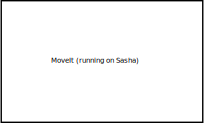
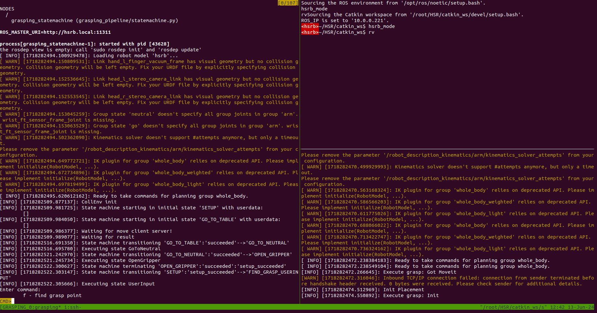
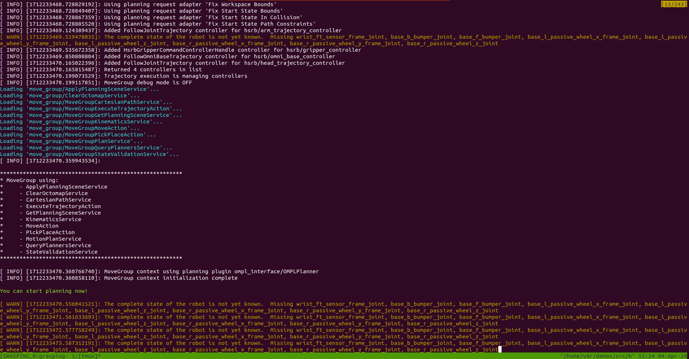

2. Starting the grasping pipeline
This page will tell you how to start the grasping pipeline. It will also explain how to use the tmux session that is created when starting the grasping pipeline. It will also explain how to start the grasping-pipeline rviz visualization and which visualization topics exist.
2.1. Turning on the robot
Before starting the grasping pipeline, you should turn on the robot.
Note
When you start the grasping pipeline, a window will open displaying the commands listed in this section. You don’t need to run these commands manually beforehand. However, they are explained here because they are necessary if a user wishes to use the HSR without the grasping pipeline. For more details, see our repository.
After the robot is turned on, you have to manually start the startup procedure of the robot which aligns the robot with the pre-recorded map of the environment. This is necessary so that the waypoints work as expected.
To start the startup procedure, you first have to ssh into the robot. Ask other team members for the password.:
$ ssh v4r@hsrb.local
After you are connected to the robot, you can start the startup procedure by running the following command:
v4r@hsrb $ startup
The robot should start to move its head until it detects the marker which is placed on the wall. After it detects the marker, it should update its pose relative to the map.
Afterwards you can let the robot drive to the table by running the following command (while still being connected to the robot via ssh):
v4r@hsrb $ table
2.2. Starting the grasping pipeline
If you set up the grasping pipeline according to the installation instructions, you should be able to start the grasping pipeline tmux session by running the following command in the terminal:
$ gp
Note
If you are using the Docker container make sure to start the container first:
user@host $ hsr
root@CONTAINER_ID $ gp
This should open up a tmux session.
Note
The tmux session also runs code on sasha by starting it via ssh. Make sure that sasha is turned on and that the network connection is established.
Additionally, you should setup keys for the ssh connection to sasha (if you haven’t done so yet). This way you don’t have to enter the password every time you connect to sasha (= every time you start the tmux session). You can do this with the following commands:
$ ssh-keygen
$ ssh-copy-id -i ~/.ssh/NAME_OF_THE_KEY.pub v4r@hsrb.local
This creates a key pair and copies the public key to sasha. You should now be able to connect to sasha without entering a password. Both command should be run inside the container. After creating the ssh key, restart the tmux session.
Note
Tmux is a terminal multiplexer, allowing to view different terminals side by side (as explained in the next session). Here are some important shortscuts and commands needed for tmux: - CTRL+b and then n switches between different tmux windows (as explained in the next section) - CTRL+b and then d detaches you from the session. You combine this with the command tmux kill-session -t [session name] to stop the session or pkill tmux* to stop all sessions. - tmux attach -t [session name] attaches you to a running session There are many more shortcuts for e.g. creating, switching, closing or renaming windows. For more information please refer to the offical documentation.
2.2.1. Tmux session layout
When starting the grasping pipeline, a tmux session is created. The tmux session is divided into two windows and multiple panes.
The first window is split into five panes: - Grasping Pipeline: Statemachine: The state machine. This is where the current state will be printed and user input must be given. - Grasping Pipeline: Locally running nodes: All nodes which communicate with the grasping pipeline or outside servers (e.g. severs/clients for requesting grasp poses, object detection) are started here. - Grasping Pipeline: RViz: RViz visualization - Grasping Pipeline: Parameter launch: Here a launch file is used to publish all ROS parameters - Startup: This is where the startup script (from the previous section) can be used. This terminal is connected to the HSR, which is why using an SSH key is recommended.
Note
Generally, most nodes are running locally because the development computer is much more powerful than sasha. However, some nodes are running on sasha to reduce the network load because they subscribe to topics that require a high bandwith (e.g. pointclouds or rgb/depth images).
{kind=link}
None of the panes are running when the tmux session is started. You can start them by navigating to the corresponding window and pressing enter.
You should start the nodes in the following order:
Start the startup script in the bottom right terminal. As explained earlier, this has only to be done once, whenever the HSR is restarted.
Start the pose estimator and wait until it is running (optional). By default the table plane extractor is used to estimate the pose of the object. If this is sufficient for your use case, you don’t have to do anything. However, if you want to use another pose estimator, you should start it before starting the grasping pipeline. Additionally you need to update the
config/config.yamlfile to use the new pose estimator. For a collection of pose estimators (and others) please take a look at PODGE.Launch the parameters in the bottom middle terminal to set the ROS parameters. If you modify any parameter in
config/config.yamlyou do not need to restart the grasping pipeline or the servers and client. Simply re-launch the parameters using this terminal.Start the locally running nodes by navigating to the top middle terminal. You’ll know the servers started correctly if you don’t see any error messages and the
execute graspnode started (Execute grasp: Init), as this node usually takes the longest to initialize.Wait for a couple of seconds and then start the statemachine by navigating to the left pane and pressing enter.
Open rviz if needed.
Additionally, there is a second window in the tmux session. This window only has one pane which is used to automatically start MoveIt. MoveIt is running on sasha because of the high bandwith requirements.
{kind=link}
You can swap between the windows by pressing Ctrl+b and then n.
Warning
MoveIt will only start automatically if an SSH key is saved. Otherwise, you’ll need to start MoveIt manually each time.
The grasping pipeline succesfully started if you see the following output in the tmux session:
{kind=link}
The MoveIt window should show the message “You can start planning now!”:
{kind=link}
Note that MoveIt prints warnings very often (Thanks Toyota!). This means that you might have to scroll up quite a bit to see the “You can start planning now!” message.
2.2.2. Rviz visualization
This section will explain how to start the grasping-pipeline rviz visualization. All grasping-pipeline related visualization topics will be listed and explained.
Start the grasping-pipeline rviz visualization by running the following command in the terminal:
$ rv
This should open up the following rviz window that is customized for using the grasping-pipeline, if you used the provided rviz configuration file.

The following visualization topics are turned on by default:
Grid: A grid that helps to estimate the size of objects in the scene.
Static Map: The prerecorded map of the environment. All waypoints that the grasping pipeline uses are relative to this map.
Dynamic Map: The map that is created by the robot while exploring the environment. It is used to prevent the robot from colliding with obstacles during navigation.
Robot Model: The robot model that is used for visualization. By default the collision model is used to visualize the robot.
MoveIt Trajectory: The trajectory that MoveIt is planning for the robot. It is only shortly shown when the robot succesfully planned a motion.
Laser Scanner: The laser scanner data that is used for obstacle avoidance.
TF: Visualize the coordinate frames of the robot and the objects in the scene. The visualization of most frames is turned off by default.
Placement Debug BB: The (enlarged) bounding box of the plane that the robot will place the object on.
Placement Debug Waypoints: The waypoints that the robot uses to place objects on the table.
Grasp BB and Grasp Marker: The bounding box of the object that the robot is trying to grasp and a grasp marker that shows the grasp pose.
Xtion Point Cloud: The point cloud of the RGBD-camera that is mounted on the head of the robot.
Pose Estimation Result image: 2D image of the pose estimation result. It shows the detected object and the estimated pose of the object (projected onto the image).
The following topics are turned off by default:
MoveIt Motion Planning: Provides options to change the used planner, change the collision environment, and many more.
MoveIt Planning Scene: Visualizes the environment that is used for motion planning. It shows the robot, some manually added collision objects (e.g. the table), and an octomap that is created from the point cloud and laser data.
Raw Image: The raw RGB image of the RGBD-camera that is mounted on the head of the robot.
This is only a short overview of the most commonly used visualization topics. There are more visualization topics available. You can see a list of all available topics by clicking on the “Add” button in the “Displays” panel.
Warning
If you encounter any timeout errors (e.g. when starting new ros-nodes) make sure to disable the point cloud and the raw camera image visualizations as they use up a lot of bandwidth (~160-250 Mbps each!). This can be done by unchecking the corresponding checkboxes in the “Displays” panel. After succesfully starting the new ros-nodes you can enable the point cloud and raw camera image visualizations again.
Some images of the visualization topics are shown below:
This image shows the static map, the dynamic map, the robot model, and the laser scanner data.
This image shows the MoveIt planning scene. The robot, the collision object for the table (green bounding box), and the octomap are visible.
This image shows the bounding box of the object that the robot is trying to grasp (blue) and the grasp marker (red arrow). Additionally, the pose estimation result image is shown.
This image shows the bounding box of the table that the robot will place the object on (green) and the waypoints that the robot uses to place the object on the table (white marker). Additionally, the bounding box of the object is shown (green). The translation of the object is most likely wrong. It should only be used to see the orientation of the object after the placement.